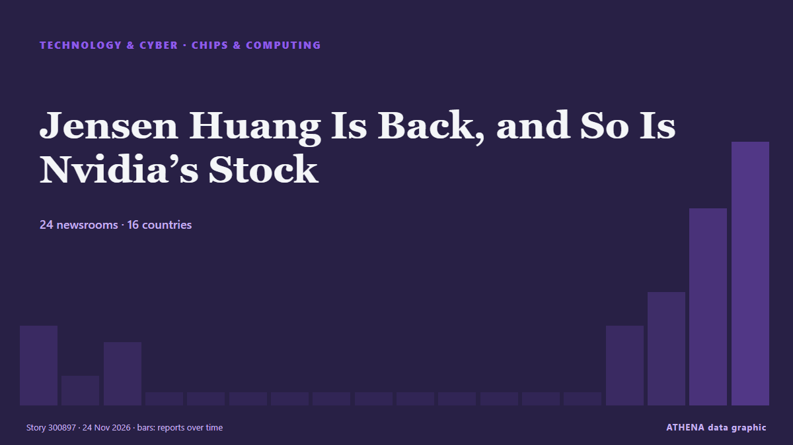

Technology, AI & Cybersecurity
SponsoredPresented by  Cybernetics and Artificial Intelligence Lab Welcome to the Cybernetics and Artificial Intelligence Laboratory, established at the Department of Business Administration of the National and Kapodistrian University of Athens. The lab is headed by Professor Dimitrios Thomakos. The lab aims to do research that can be published in top venues. Our research uses tools and methods of Artificial Intelligence, and lies in the following areas: - Forecasting - Decision making - Cyber security - Finance We are always looking forward to collaborating with exceptional students!
Cybernetics and Artificial Intelligence Lab Welcome to the Cybernetics and Artificial Intelligence Laboratory, established at the Department of Business Administration of the National and Kapodistrian University of Athens. The lab is headed by Professor Dimitrios Thomakos. The lab aims to do research that can be published in top venues. Our research uses tools and methods of Artificial Intelligence, and lies in the following areas: - Forecasting - Decision making - Cyber security - Finance We are always looking forward to collaborating with exceptional students!

Chips & computingJensen Huang Is Back, and So Is Nvidia’s Stock
Jensen Huang comes back, numbers go up. Maybe the reason behind the CEO’s return is just that simple? from Wired
| 11 Nov | 83 |
|---|---|
| 12 Nov | 74 |
| 13 Nov | 87 |
| 14 Nov | 40 |
| 15 Nov | 45 |
| 16 Nov | 114 |
| 17 Nov | 102 |
| 18 Nov | 104 |
| 19 Nov | 104 |
| 20 Nov | 66 |
| 21 Nov | 30 |
| 22 Nov | 44 |
| 23 Nov | 48 |
| 24 Nov | 0 |
GTA VI hacker released despite being sentenced to 7 years in UK prison
Arion Kurtaj, 21, who leaked 90 gameplay videos in 2022, released on license after court accounts for time spent in custody and hospital. from Anadolu Agency (English)
Virginia, Oregon sue Musk's SpaceX over Grok AI's creation of child sexual abuse images and videos
Nov 23 - Virginia and Oregon are suing Elon Musk's SpaceX Super Intelligence Corp, alleging the company profited from a feature in its AI model Grok that produces child sexual abuse material and… from The Straits Times
Lough Neagh book reveals warnings of wastewater treatment ‘disaster‘ due to NI Water funding cut
A new book about the plight of Lough Neagh reveals the anticipated impact of a lack of investment in wastewater infrastructure. from The Irish News (Belfast)
Amazon Acquires Tech and Staff From AI Startup Decart
Amazon says it will acquire the technology behind artificial intelligence (AI) startup Decart. from PYMNTS
US Cyber Director Pick Signals Shift Toward Expertise
Trump named Kirsten Davies as Acting National Cyber Director, bringing greater industry experience to the role amid recent outages and rising geopolitical tensions. from Dark Reading
Reports: Russia may launch nuclear weapon into orbit as soon as next month
A nuclear detonation in space "could cause rapid and sudden loss or degradation of thousands of satellites." from Ars Technica
European-Japanese spacecraft reaches Mercury after eight-year journey, suffers glitch
Mercury, only slightly larger than Earth's Moon, is the least explored of the four planets in the inner solar system, with BepiColombo only the third spacecraft to visit the planet. from The Jerusalem Post
Spanish football league LaLiga suffers cyberattack exposing fans' personal data
Stolen information includes data from users registered with LaLiga's digital services and those of some clubs. from Anadolu Agency (English)
FBI reportedly investigating apparent hack of its criminal database
The National Crime Information Center database is used by federal and local law enforcement to share information. from BBC News
UK defence secretary wants to find out what happened with Starlink and Starshield in Ukraine
UK Defence Secretary Wes Streeting said Starlink and Starshield disruptions in Ukraine require a clear explanation, noting they have dented allies' trust. from Ukrainska Pravda (English)
Tower Records Becomes Latest Japan Retailer Hit by Data Breach
Music retailer Tower Records Japan Inc. said customer information was leaked following unauthorized access, making it the nation’s latest retailer to disclose a data breach. from Insurance Journal
Countries agree to work toward ‘killer robots’ pact
GENEVA, Nov 20 - UN talks on rules for autonomous weapons headed into overtime on Friday with some nations including Russia dragging their feet and negotiators considering a non-binding deal on arms… from The Straits Times
India pledges $1.6bn to Nepal in reset of ties
India and Nepal in their first bilateral meet in New Delhi signed a string of memorandum of understanding (MoUs), inaugurated various projects and flag off Janakpur-Ayodhya train on Monday amid both… from Deccan Herald
Ethiopia and Rwanda Seek to Elevate Bilateral Partnership Through Practical Cooperation
Addis Ababa, November 23, 2026 (FMC) – Ethiopian Prime Minister Abiy Ahmed held talks with Rwandan Prime Minister Justin Nsengiyumva to exchange views on advancing practical collaboration and explore… from Fana Broadcasting Corporate
OpenRouter drops three AI providers after Dragos catches prompt theft
OpenRouter has removed three inference providers from its platform and stripped 125 endpoints of their Zero Data Retention (ZDR) status. from The Next Web
TikTok launches tool to help public figures detect deepfakes globally
The tool is being gradually rolled out, allowing politicians and popular TikTok accounts to report AI-generated content using their likeness without consent. from Free Malaysia Today
Italy Gives Tesla Green Light for Assisted Driving
The landmark approval makes Italy the first major EU market to allow the technology on its roads, with drivers still required to remain alert. from News of Bahrain
Many Etsy Sellers Close Up Shop Over Site’s New A.I. Policy
Numerous longtime users of the online marketplace have left the platform because they do not want their work training artificial intelligence. from New York Times Business
2 probes enter orbit around Mercury on Japan-Europe joint mission
Two probes, part of the BepiColombo joint Japan-Europe mission, have entered orbit around Mercury, the European Space Agency said Sun. from Mainichi (English)
Landmine blast kills 5 children in northwest Syria: state media
A land mine explosion in the Idlib province of northwest Syria killed four children and injured two others. from Arab News
OpenAI chief scientist urges industry limits on AI development
Jakub Pachocki warned that AI could accelerate advances in its own development as soon as 2027. from The Straits Times
Nvidia's accounting is focus of US SEC investigation, sources say
The U.S. Securities and Exchange Commission is probing Nvidia's accounting practices, said two people briefed on the matter, adding to the legal woes facing the scandal-hit chip giant. from The Korea Times
Microsoft, Google turn to Intel EMIB as CSPs seek alternatives to TSMC CoWoS
Intel and Microsoft jointly announced on November 18, US time, that Microsoft will adopt Intel Foundry's embedded multi-die interconnect bridge (EMIB) advanced packaging technology for its custom… from DigiTimes Asia
Exclusive-Like SpaceX, Anthropic ran an unusual IPO process, chafing some bankers
Bankers criticised SpaceX's tight control over its IPO process, which limited advisers' access to information. from Express Tribune
Honda to launch new hybrid Avancier SUV in Japan after debut in Thailand
The Avancier will not be sold in the US, Honda’s biggest market, but will occupy the top spot in its Asia-Pacific SUV lineup, above the popular CR-V. from Free Malaysia Today
Influencer deepfakes used to stoke Canada-US tensions
Content creators say their identities are being stolen to create division. from The Straits Times
Former IRGC commander, sanctioned by Canada, to address London Islamophobia conference
The 13th Islamic Human Rights Commission conference, titled 'Artificial Intelligence and Islamophobia,' will be held on December 13. from The Jerusalem Post
Anthropic claims AI-assisted breakthrough on 167-year-old math problem
Levent Alpoge says he has proved the Riemann hypothesis, proposed by Bernhard Riemann in 1859. from Express Tribune
Africa: WGS Dialogue for Latin America and the Caribbean Explores Stronger Cooperation in Shaping the Future
[WGS] 10 heads of state and government and international organisations. from AllAfrica
'Not MAGA' anymore: Elon Musk has regrets
Musk was referring to the technological singularity, a point at which AI accelerates beyond our understanding. from Inc.
Bitcoin price drops to $60K as Anthropic drops to $87 in tech sell-off
Bitcoin price strength felt pressure from falling US equities as traders reassessed AI prospects after Anthropic’s IPO. from Cointelegraph
Signal Blocks AI Agents From Reading Private Chats via Screenshots on Android and iOS
Signal has announced that it will restrict screenshots by default to stop artificial intelligence (AI) agents from reading private chats on Android and iOS devices, but conceded that the protection… from The Hacker News
Trump threatens to tax US firms that build data centres abroad
WASHINGTON: President Donald Trump threatened on Friday to impose a steep tax on US companies that build data centres overseas. from New Straits Times
Nvidia faces US accounting probe amid deepening turmoil: Media
The Securities and Exchange Commission (SEC) inquiry is in its early stages. from The Straits Times